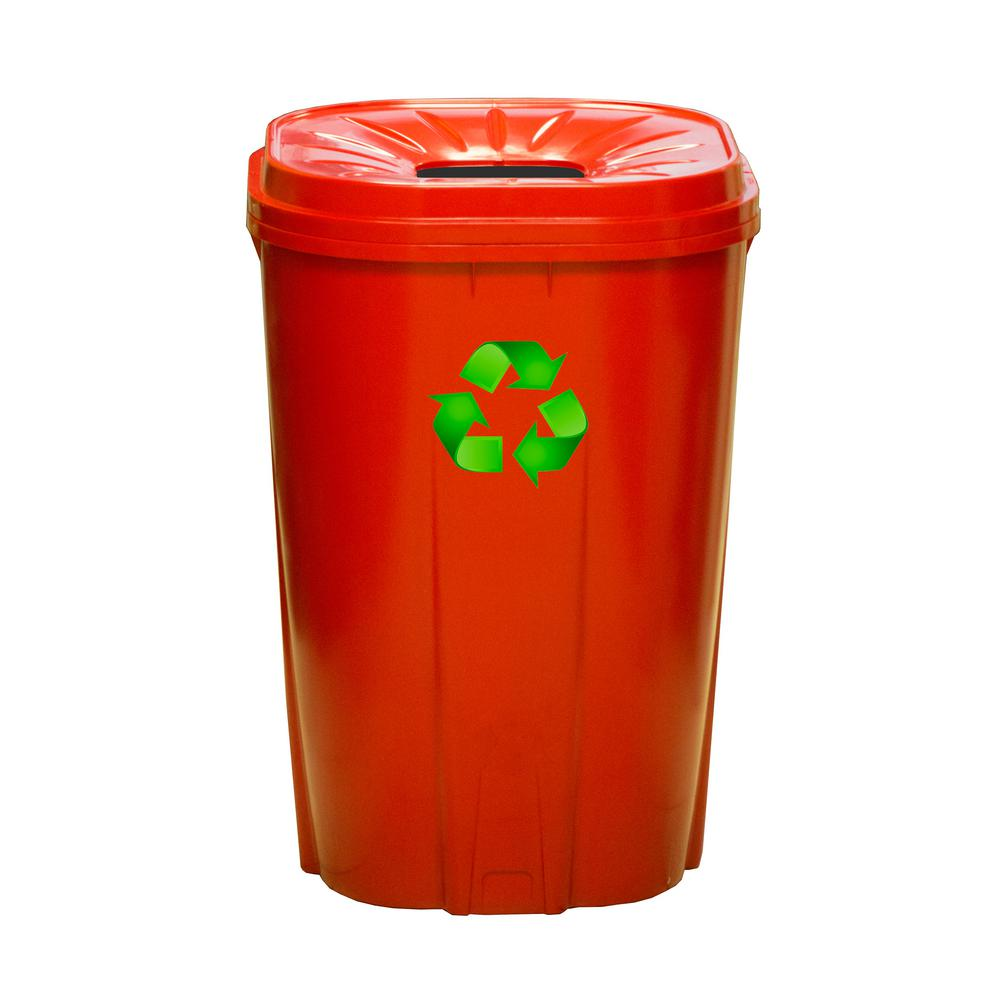
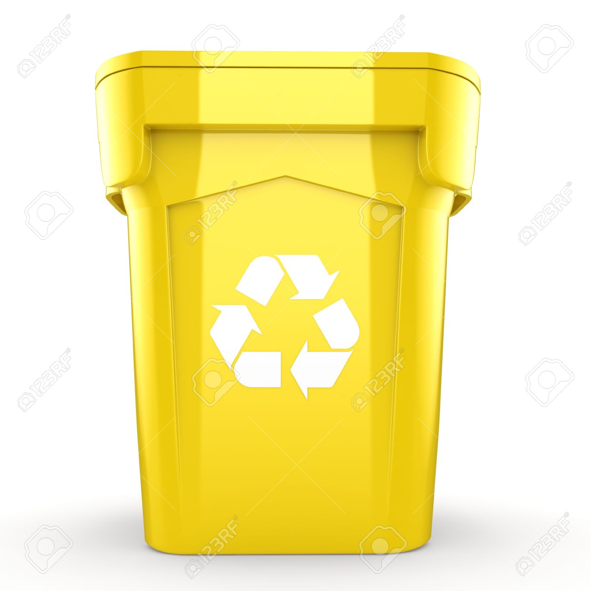
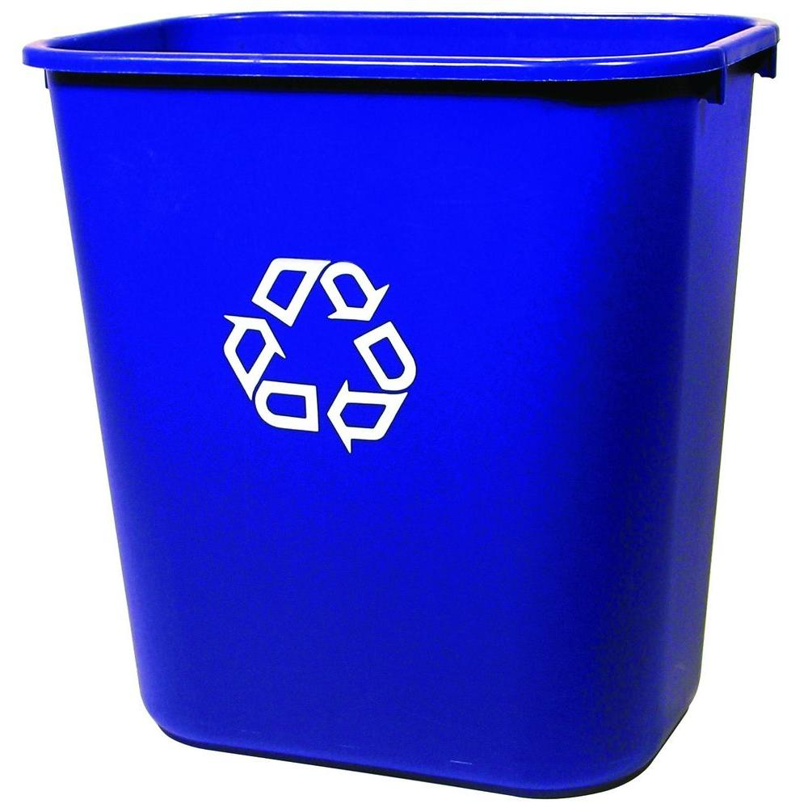

The rules of Recycling

This image is a good indication of what you can and what you can't recycle. E-waste is covered in our e-waste section as it is a special type of recyleable goods.
Red Bin
Yellow Bin
Blue Bin
  - General Waste
- Nappies
- Polystyrene
- Soft plastics
- Paper
- Cardboard
- Cartons
- Plastic containers
- Glass Bottles
- Glass Jars
- Aerosols
Follow these rules when throwing away items you do not need anymore and you should be sorted!